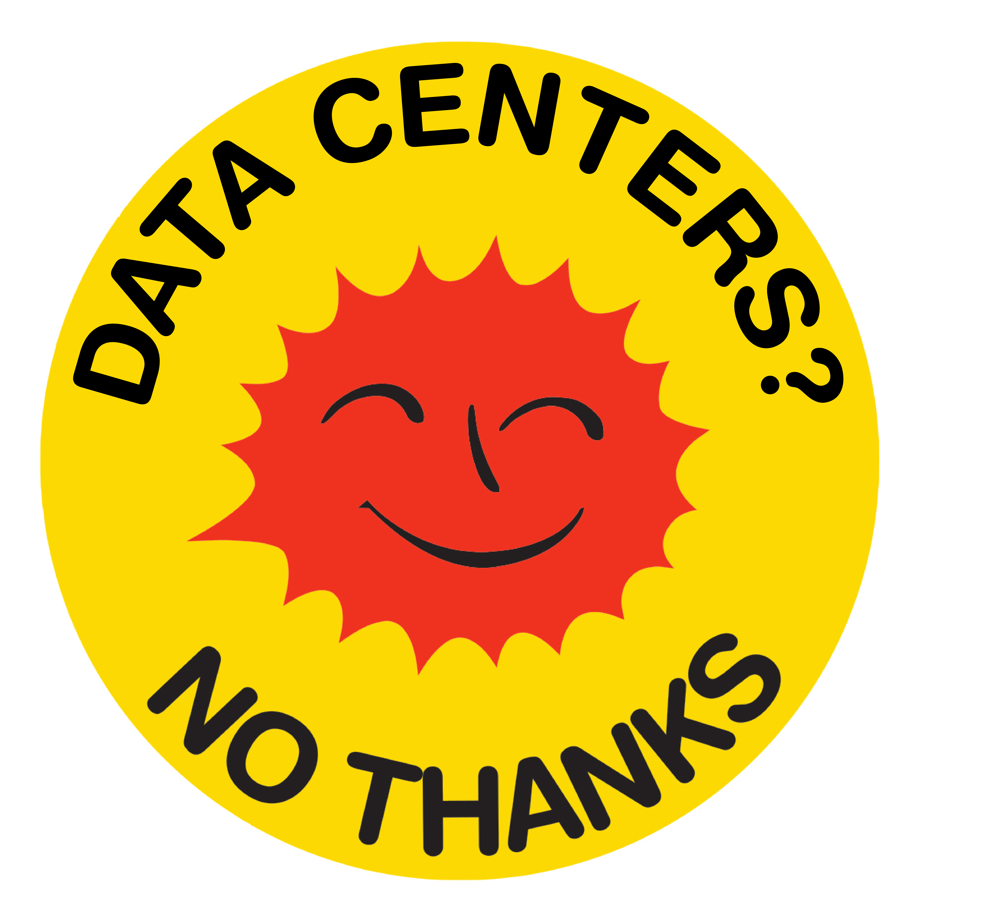

Virtual Field Trip
a summary of the public testimony overlaid on videos of the planned construction site.
a protest outside the town hall disrupts the meeting.
The experience prompted us to think about the impact of our own tools and methods in terms of energy usage and our reliance even with small model training on cloud services like Google colab. We also discussed the geopolitical aspects of the data center issue noting that while data centers might be showing many americans the physicality of the digital for the first time, the global majority has already shouldered this for decades -- for example with excessive mineral extraction for technology development.
